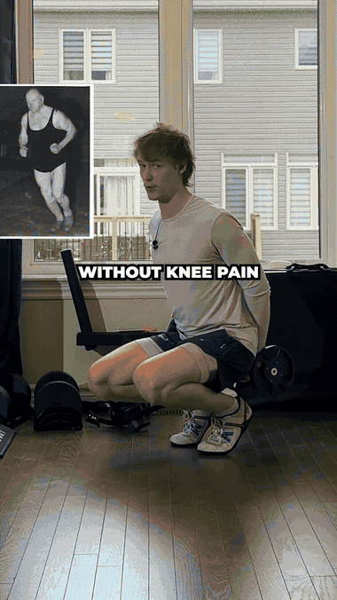
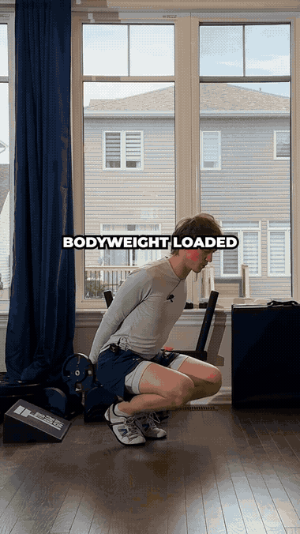
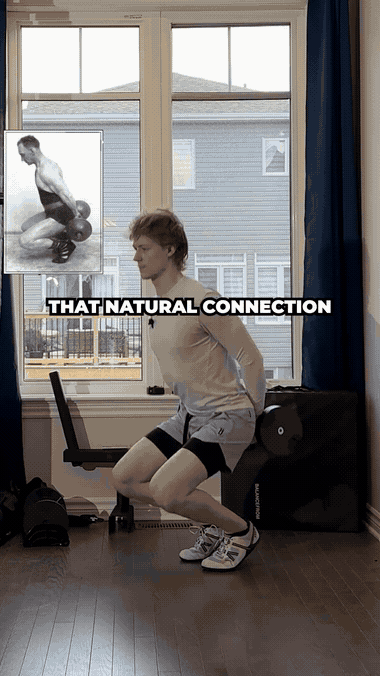

💡 How to follow: 4 movements, no equipment, ~20 min. Foundation of the "Mastery in 20 Movements" series.
1
Hackenschmidt Sissy Squat
Quad · Knee tendon3 × 8–10

The quad-and-knee-tendon builder — a deep, controlled negative on the front chain.
- Hold a wall/step for balance
- Knees travel forward as you lean back
- Descend slow, drive up through the quads
2
Tibialis Anterior Wall Raise
Shin · Knee stability3 × 15

The forgotten shin muscle that stabilizes the knee and ankle — anti-injury insurance.
- Back flat against a wall, feet ~30cm out
- Flex toes toward the shins
- Rise onto the heels, control down
3
Slant-Board Poliquin Step-Up
VMO · Knee tracking3 × 10 / side

The Poliquin step-up fires the VMO (inner quad) that tracks the kneecap — your office step works as the board.
- Heel of the front foot planted, toes straight
- Drive up through the front heel — don't push off the back foot
- Slow 3s lowering
4
Deep Squat Hold
Ankle · Hip mobility3 × 30–45s

Own the bottom of the squat — the mobility base for every leg move.
- Feet ~shoulder-width, toes slightly out
- Sink to full depth, chest up
- Drive elbows between knees, stay tall